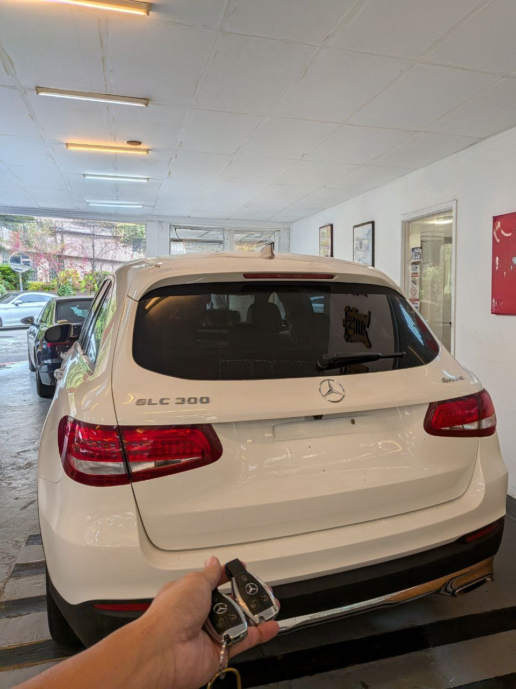

今日前往彰化員林為一位賓士 GLC300 車主進行智慧鑰匙新增服務。車主反應原本只有一把鑰匙，擔心遺失後會面臨高昂的拖吊與原廠等待費用，因此預約現場配製。
服務細節：
- 車型：2016 Mercedes-Benz GLC300
- 地點：彰化員林
- 技術：原廠級診斷設備，免拆解數據讀取
- 耗時：約 45 分鐘完工
現場配製的智慧鑰匙完全支援 Keyless Go 免鑰匙啟動及所有原廠功能。極致核心深耕中彰投地區，提供最迅速的現場解碼服務。

今日前往彰化員林為一位賓士 GLC300 車主進行智慧鑰匙新增服務。車主反應原本只有一把鑰匙，擔心遺失後會面臨高昂的拖吊與原廠等待費用，因此預約現場配製。
現場配製的智慧鑰匙完全支援 Keyless Go 免鑰匙啟動及所有原廠功能。極致核心深耕中彰投地區，提供最迅速的現場解碼服務。